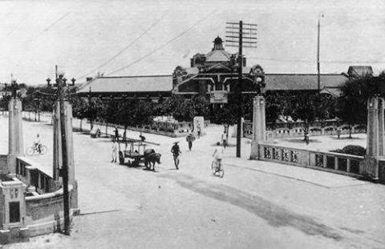

臺中東協廣場：穿梭時空的異國生活聚落
走進臺中中區，品味揉合歷史記憶與東南亞多元文化的在地日常
臺中東協廣場位於臺中市中區，坐落於臺灣大道一段、成功路與綠川交會處。本專題透過田野調查、影像紀錄與網頁視覺設計，帶領觀者重新審視這座承載過往繁華、如今轉化為東南亞移工與新住民生活重鎮的獨特地標。我們希望透過鏡頭與文字，打破大眾對舊城區的既定印象，看見共融與新生的城市力量。
走進臺中中區，品味揉合歷史記憶與東南亞多元文化的在地日常
臺中東協廣場位於臺中市中區，坐落於臺灣大道一段、成功路與綠川交會處。本專題透過田野調查、影像紀錄與網頁視覺設計，帶領觀者重新審視這座承載過往繁華、如今轉化為東南亞移工與新住民生活重鎮的獨特地標。我們希望透過鏡頭與文字，打破大眾對舊城區的既定印象，看見共融與新生的城市力量。
東協廣場的前身為風光一時的「第一廣場」，在 1990 年代曾是臺中市商業、娛樂與百貨的絕對核心。然而隨著商圈不斷向外移轉，中區面臨了嚴重的都市老化與空洞化危機。
轉機發生在假日休閒與移工社群的進駐。來自印尼、越南、泰國、菲律賓等國的移工與新住民，將這裡逐步形塑成充滿異國風情的聚落。2016年政府正式將其更名為「東協廣場」，象徵舊城區邁向多元文化共融的重要里程碑。

圖二：新舊招牌交織的街景，見證時代變遷
在假日午後的東協廣場，宛如一個小型聯合國。大樓內不僅有專屬東南亞各國的超市、電信行、服飾店，更成為異鄉人凝聚情感、分享家鄉文化的精神綠洲。這裡的每一家店鋪、每一個招牌，都訴說著離鄉背井的故事，也為臺中注入了前所未有的國際化色彩與多元包容力。
談到東協廣場，絕對不能錯過令人垂涎的道地美食。從外皮酥脆內餡豐富的越南法國麵包、香氣撲鼻的印尼黃薑飯、酸辣夠勁的泰式涼拌木瓜，到各國特色手搖飲與傳統甜點，這裡提供最原汁原味的味蕾體驗，是喜愛異國料理者的尋寶勝地。
以下為本專題搭配介紹的 YouTube 實地走訪短片（揭開台中「東協廣場」步行出國的神秘面紗），帶您以動態視角走入東協廣場的日常街景：
東協廣場鄰近臺中火車站，步行僅需約 5 至 10 分鐘，周邊公車路線四通八達，交通極其便利。下方地圖標示了廣場的確切位置，方便實地走訪參閱：